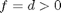
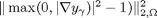
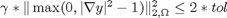
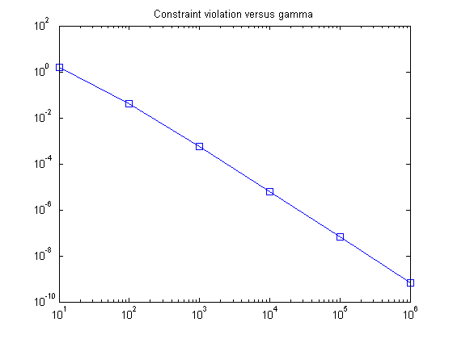
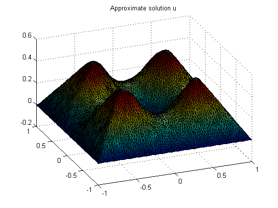

Contents
function min_gradient_constraint
%{ Solving elasto-plastic torsion problem (gradient constrained minimization problem) in 2D by using of Semi-smooth Newton method (active set strategy) %}
clc; clear all;
Input parameters
For the case  constant ('exact' problem):
global d;
alpha - is a damping parameter
alpha=0.5;
tol - tolerance parameter for the gradient constraint violation 
tol=10^(-4);
Geometry
load('geometry_square.mat'), % for the unstructured mesh % importfile('Glow_example2'), % for the unstructured mesh % importfile('Glow_example2_struct'); % structured mesh % [xb,yb]=find(or(coordinates==0,coordinates==1)); % J2=[185:189,206,223,240,257:261]; % J=[xb;J2']; BoundaryNodes=unique(J);
This loop is to test for different mesh-sizes
%h_v=[0.03 0.025 0.02 0.015] % h_v=0.03 constr_m=[]; for h=h_v % Initialization and refining of the mesh [coordinates,edges,triangles]=initmesh(geom, 'Hmax', h); % pdemesh(coordinates, edges, triangles) N=size(coordinates, 2); % returns number of nodes in the triangulated mesh N_t = size(triangles,2); % returns the number of triangles in the mesh (number of columns) Nodes=1:N; BoundaryNodes=unique(edges(1:2,:)); % boundary nodes IntNodes=setdiff(Nodes,BoundaryNodes); % internal nodes H1_v=[]; % This loop is to test for different d for d=[10]
disp('Timing begins...'); tic constr_vec=[]; [A,~,F]=assema(coordinates,triangles,1,0,f(coordinates,triangles)); % Initialization with zeros u=zeros(N,1); u(IntNodes)=A(IntNodes,IntNodes)\F(IntNodes); constr=L2_grad(u, triangles, coordinates); % computation of the constrain violation term $\|\max(0, |\nabla y|^2-1)\|^2$ Grad_u=zeros(2,N_t); [Grad_u(1,:),Grad_u(2,:)]=pdegrad(coordinates,triangles,u); Grad_u2=(Grad_u(1,:).^2+Grad_u(2,:).^2); Chi=(Grad_u2>=1); % characteristic function for the active set delta_u=zeros(N,1);
Timing begins...
The outer loop is executed unless 
iter=1; % iterations counter gamma=1; % continuation parameter (zero corresponds to unconstrained solution initialization) loop_gamma=true; while loop_gamma % disp(['gamma = ',num2str(gamma,'%6.2e\n')]); loop_Newt=true; iter_Newt=0; % counter of Newton iterations while loop_Newt iter=iter+1; iter_Newt=iter_Newt+1; [rhs]=assema(coordinates,triangles,-(1+2*gamma*Chi.*(Grad_u2-1)),0,1); % assembling of the right hand side matrix c=coefficents(triangles,Grad_u,gamma); [A]=assema(coordinates,triangles,c,0,1); % assembling of the left hand side matrix b=rhs*u+F; delta_u(IntNodes)= A(IntNodes,IntNodes)\b(IntNodes); u=u+alpha*delta_u; [Grad_u(1,:),Grad_u(2,:)]=pdegrad(coordinates,triangles,u); Grad_u2=(Grad_u(1,:).^2+Grad_u(2,:).^2); Chi_p=Chi; Chi=(Grad_u2>=1); if and(iter_Newt>=2, all(Chi==Chi_p)) % checking of the stopping criterion loop_Newt=false; % disp(['Stop condition for the Newton iterations is satisfied at the Newton step ',num2str(iter_Newt)]); end if iter_Newt==50 % here we limit the number of Newton iterations loop_Newt=false; disp('Maximal number of Newton iterations has reached, breaking...'); end end constr=L2_grad(u, triangles, coordinates); % computation of the constrain violation term $\|\max(0, |\nabla y|^2-1)\|^2$ disp([num2str(gamma,'%7.1e\n'), ' & ', num2str(iter_Newt,'%4.0f'), ' & ' , num2str(constr,'%8.4e')]); if and(gamma>1, gamma*constr<=2*tol) loop_gamma=false; disp(['Constraint violation is sufficiently small for the given tol.parameter tol=',num2str(tol)]) end if gamma==10^20 loop_gamma=false; disp(['Maximal value of gamma has reached. Constraint violation is ',num2str(constr)]); disp('Breaking...'); end gamma=(gamma==0)+(gamma>0)*gamma*10; constr_vec=[constr_vec constr]; end toc disp([num2str(N,'%04.0f'), ' & ', num2str(iter,'%03.0f'), ' & ', num2str(constr,'%8.4e\n')]); constr_m=[constr_m; constr_vec];
1.0e+000 & 19 & 1.5495e+000 1.0e+001 & 13 & 4.2649e-002 1.0e+002 & 13 & 5.8737e-004 1.0e+003 & 12 & 6.3146e-006 1.0e+004 & 15 & 6.4125e-008 1.0e+005 & 9 & 6.7034e-010 Constraint violation is sufficiently small for the given tol.parameter tol=0.0001 Elapsed time is 33.761969 seconds. 7690 & 082 & 6.7034e-010
end end
h_v =
0.0300
warning: Approximately 8888 triangles will be generated.
Postprocessing
if size(triangles,1)==4 triangles(4,:)=[]; end x=logspace(1,log10(gamma),log10(gamma)); figure(1); loglog(x,constr_m,'-s');title('Constraint violation versus gamma') show(2,triangles,coordinates,u,[-22 36]); title('Approximate solution u') % ShowPC(3, triangles,coordinates,Chi); title('Active and Inactive sets' ) % ShowPC(4, triangles,coordinates,sqrt(Grad_u(1,:).^2+Grad_u(2,:).^2)); title('Gradient magnitude' ) return 